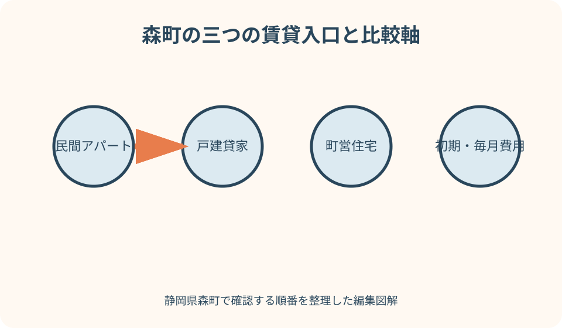
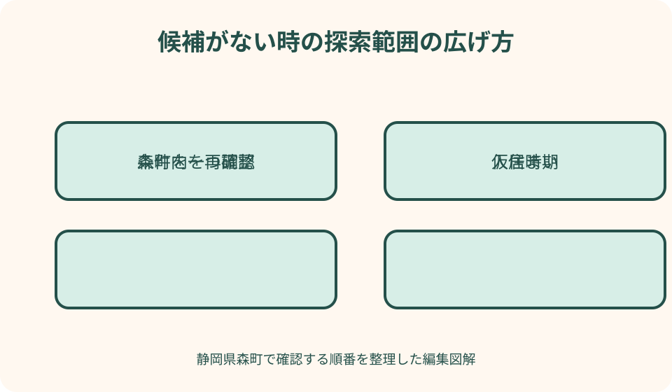

住まい・賃貸｜最終確認 2026-08-10
静岡県森町で賃貸住宅・アパート・貸家を探す｜移動・費用・契約の確認手順
森町で賃貸住宅を探すときは、検索サイトの一覧だけで結論を出さず、民間アパート、戸建貸家、町営住宅を別の入口から調べます。募集表示は日々変わり、掲載がなくても供給が少ないと断定できず、掲載中でも契約できる保証はありません。遠州森駅周辺の徒歩生活と、飯田・一宮・天方・三倉方面の車中心の生活では、同じ家賃でも移動費と時間が変わります。初期費用、駐車条件、通勤通学、浸水・土砂、内見、契約、退去までを一続きで確認する手順をまとめます。

編集イラスト先に入居条件を一枚へ固定する
検索を始める前に、入居希望月、同居人数、必要な部屋数、車と二輪車の台数、ペット、仕事場、学校、予算上限を一枚にまとめます。条件が変わるたび検索結果を比較し直す手間を減らせます。
譲れない条件は三つ程度に絞ります。家賃だけでなく、通勤時間、駐車区画、階段、騒音、通信、災害リスクのどれを優先するかを世帯で決めます。乳幼児、高齢者、在宅勤務者がいる場合は、昼寝やオンライン会議、階段移動、通院の時間帯まで条件表へ加えます。
入居日には幅を持たせ、現在の住まいの解約通知期限と重ならない空白期間を確認します。町営住宅は民間賃貸と同じ速度で入居できる制度ではありません。
『森町ならどこでもよい』ではなく、勤務先や学校へ何時に着くかを起点に範囲を描きます。町境を越える経路も含め、地区名だけで便利さを決めません。
民間アパート・戸建貸家・町営住宅を分ける
民間アパートは一棟内の共同住宅、戸建貸家は建物と敷地を一世帯で使う形が多いものの、実際の管理範囲や契約条件は各物件で違います。名称から決めつけません。
戸建貸家では庭、側溝、草木、物置、浄化槽、境界付近の管理を誰が行うかが重要です。一戸建てだから自由に改修や駐車できるとは限りません。
町営住宅は住宅に困窮する一定の要件を満たす人を対象とする公営住宅です。通常の民間募集とは申込資格、募集時期、審査、家賃の考え方が異なります。
三種類を同じ一覧の『安い順』に並べず、申込可能性、入居までの期間、設備、維持負担、退去条件を別表にして比較します。
募集情報は日付と管理者を確認する
不動産ポータルの表示は候補発見に便利ですが、掲載更新日、取引態様、管理会社、現在の申込状況を問い合わせて確かめます。検索画面だけで空室を確定しません。
同じ住戸が複数社から掲載されていることがあるため、件数を物件数と数えません。住所、間取り、階、管理者、写真を照合して重複を外します。
ウェブに候補が見つからない場合も、森町内に賃貸住宅がないとは断定できません。地域を扱う事業者へ希望条件と時期を伝え、未掲載を含む扱い方を確認します。
町営住宅は森町公式ページの募集案内を見ます。公式には空室や入居準備の事情で募集しない場合がある旨が示されているため、過去募集を現在の空きと読みません。

良い点
森町公式には町営住宅、町営バス、ハザードマップ、移住支援の入口が分かれており、住戸だけでなく生活条件を公的情報へ戻って確認できます。
天竜浜名湖鉄道の駅周辺、町なか、幹線道路沿い、山間部という違いを意識すると、車一台追加と駅徒歩のどちらが家計へ効くか具体的に比べられます。
賃貸なら、購入前に地域の通勤、買物、気候、近隣との距離感を日常として確かめる選択にもなります。ただし短期解約や定期借家の条件は先に見ます。
戸建貸家、共同住宅、町営住宅を並行して探せば、間取りだけでなく管理負担と申込時期を含む複数の道を残せます。
町営住宅は資格と募集回を公式で確認する
森町の町営住宅公式ページには団地、募集の考え方、申込資格、必要書類の入口があります。収入基準は手取り額そのものではないため、自分で概算して適格と断定しません。
世帯構成、住宅困窮理由、税の状況など複数条件があります。単身申込の扱いや世帯人数の条件も募集住戸で確認し、定住推進課へ事前相談します。
募集回数の案内があっても、毎回すべての団地で住戸が出る意味ではありません。当回の募集住戸、受付期間、提出方法、入居見込みを最新公告で確かめます。
民間住宅の解約や引越しを、町営住宅へ入れる前提で先に確定しません。審査と入居準備に必要な期間を担当課へ聞き、別の住まいも並行して残します。
初期費用は家賃何か月分という概算で終えない
候補ごとに、敷金、礼金、前家賃、日割り、仲介手数料、保証、保険、鍵、清掃、駐車場、町内会等の項目別見積書を依頼します。名称が同じでも扱いは契約ごとに違います。
必須と任意を分け、保証委託料や保険の更新、駐車場の別契約、短期解約時の負担まで期間軸で確認します。入居時だけ安く見せる比較を避けます。
引越し、カーテン、照明、ガス開栓、ネット工事、冬夏の家電、車の追加費用も住み始めるための支出です。見積り外の準備費を別枠にします。
月々は賃料、共益費、駐車料、保証更新、通信、水道光熱、浄化槽等の負担を確認します。森町の一律相場や標準額はこの記事で示しません。

通勤通学は時刻表と実走を組み合わせる
遠州森駅など天浜線の駅を使う場合、物件からホームまでの徒歩、自転車置場、列車時刻、乗換え、帰宅便を事業者公式で往復確認します。地図の徒歩分数だけでは足りません。
町営バスや予約便は路線、対象、予約、運休日が変わり得ます。森町公式の当年度案内へ戻り、勤務時間や学校行事の日にも使えるかを確認します。
車通勤では晴れた休日の所要時間ではなく、平日朝夕、踏切、学校周辺、雨、工事、迂回を見ます。勤務先の駐車条件と燃料費も合わせます。
家族で出発時刻が異なる場合、車を一台で共有できるか、送迎が毎日発生するかを一週間の表にします。住戸の安さを送迎時間で打ち消さないためです。
駐車場は台数だけでなく区画と契約を確認する
駐車場付きという表示でも、賃料込み、別料金、近隣借上げ、先着、車種制限などがあります。各車の全長・全幅を伝え、指定区画を現地で見ます。
戸建貸家の庭先へ複数台置けそうでも、契約上の使用範囲、道路へのはみ出し、側溝、切返し、来客車を確認します。空地や農道へ置く計画は立てません。
共同住宅では夜間の満車、区画番号、縦列、騒音、ヘッドライトが住戸へ向く位置、除草や清掃を確認します。EV充電器の設置可否は貸主の承諾前提です。
軽自動車から大きい車へ替える予定や、家族の車が増える見込みも伝えます。契約中に第二駐車場を確保できる保証はないため、増車時の代案を先に決めます。
内見は室内・建物・周辺の三周で行う
一周目は室内の寸法、日当たり、窓、収納、コンセント、水圧、換気、におい、音を確認します。家具と家電の寸法を持参し、写真の広角表現だけで判断しません。
二周目は共用廊下、階段、郵便、ゴミ置場、駐輪、駐車、外灯、避難経路を見ます。戸建では屋根、外壁、雨樋、庭、水路、管理範囲を確認します。
三周目は最寄り駅やバス停、買物、学校、医療、避難先まで実際の経路をたどります。歩道の有無、夜の暗さ、坂、川や斜面との位置関係を記録します。
見つけた傷、汚れ、設備不調は入居前の修繕範囲と完了時期を文書で確認します。担当者の『直ると思う』を契約条件に置き換えません。
雨の日・夜・通信環境を追加で確かめる
可能なら雨天か雨上がりに、道路の冠水、側溝、玄関への吹込み、駐車場の水たまり、斜面からの水を安全な範囲で確認します。危険な豪雨時には内見を中止します。
夜は駅や駐車場から玄関までの街灯、車の見通し、周辺音を見ます。敷地へ無断で入らず、仲介者と日時を調整し、近隣の生活を妨げません。
携帯各社のエリア表示だけでなく、室内の利用場所で通話・通信を確認できるか相談します。在宅勤務なら固定回線の引込み、工事、開通までの代替も調べます。
テレビ、ガス種別、給湯、井戸や浄化槽など設備方式を設備表で確認します。使えるという説明と、費用・保守・故障時の連絡先を分けて聞きます。
注文したい点
募集図面には、駐車区画の位置と車種条件、公共交通への実経路、管理する庭・側溝、通信と給排水方式まで示してもらえると比較しやすくなります。
初期費用見積りには各項目の根拠、必須・任意、返還の有無、更新時と退去時の可能性を分けてほしいところです。『一式』の内容は署名前に質問します。
修繕予定がある場合は、場所、作業内容、完了確認、未完了時の扱いを書面へ反映してもらいます。写真と現況が異なる理由も確認します。
遠方から探す人向けにも、オンライン内見だけで契約を急がせず、現地確認できない事項と追加質問の期限を明示してもらいたいところです。
ハザードマップは住戸と毎日の経路で読む
森町防災ハザードマップで、候補住所がある地区の河川氾濫、土砂災害に関する表示、避難施設を確認します。一種類の色だけで安全を断定しません。
一階と上階では考える事項が違い、戸建では床、設備、車の退避も検討します。避難所は指定されていることと災害時に開設されることを分けて確認します。
住戸に色がなくても、駅、学校、勤務先へ向かう橋、川沿い、斜面下が通れない場合があります。通勤通学と避難の複数経路を地図へ描きます。
大雨警報や避難情報が出たときの連絡、休業・休校、停電、断水、通信切れを家族で決めます。賃貸契約が災害時の居住継続を保証するものではありません。
重要事項説明と契約書を時間を置いて照合する
申込後は、重要事項説明書、賃貸借契約書、特約、設備表、初期費用見積り、保証委託、保険、駐車契約をそろえ、同じ条件になっているか確認します。
普通借家か定期借家か、契約期間、更新、解約予告、短期解約、禁止事項、修繕連絡、入居者追加、転貸、ペットを条項ごとに読みます。
国土交通省の賃貸住宅標準契約書は比較のためのモデルで、使用が義務ではありません。実際の契約が異なる部分を質問する物差しとして使います。
理解できない文言は署名日に初めて聞かず、事前に写しを求めます。回答はメール等で残し、必要なら消費生活相談や法律の専門家へ相談します。
入居時の記録が退去時の確認を支える
鍵を受け取ったら家具を入れる前に、床、壁、建具、水回り、設備、外部の傷や汚れを日付入り写真とチェック表で記録し、管理者へ期限内に共有します。
国土交通省は原状回復トラブルを防ぐため、入居時の物件状況と契約条件の確認を案内しています。ガイドラインと実際の特約を並べて読みます。
通常損耗、故意過失、特約の負担を自分だけで法的に断定せず、不明点は管理者へ具体例で確認します。退去時の精算方法と立会いも先に聞きます。
設備故障や漏水は連絡先、受付時間、応急時の手順を保存します。自分で修理してよい範囲を推測せず、写真を添えて管理者の指示を受けます。
森町内に候補がない時は時間軸を変える
希望日に候補が出ないときは、供給が恒常的に少ないと結論づけず、入居時期、部屋数、築年、駅距離のうち一条件ずつ緩め、事業者へ再照会します。
短期の仮住まいを使う場合は、家具、保管、二度の引越し、解約条件を含めて比較します。町営住宅の募集待ちだけを理由に契約可否が不明な住まいを手放しません。
戸建希望を共同住宅へ、町なか希望を駅やバスへ接続できる地区へ変えるなど、暮らしの目的を保った代案をつくります。車の追加が必要なら費用も足します。
問い合わせ記録には物件名ではなく希望条件、回答日、次回確認日を残します。同じ古い掲載へ何度も戻らず、情報更新の入口を管理します。
周辺市の代案は勤務先から逆算する
袋井市、掛川市、磐田市なども候補にする場合、行政界からの近さではなく、勤務先や学校への平日所要時間、道路、鉄道、乗換えで比べます。
周辺市で候補が増えても、家賃だけを比較しません。駐車、燃料、定期、送迎、保育・学校、行政サービス、引越し後の住所手続を総費用へ入れます。
森町へ毎日通うなら朝夕の新東名周辺、県道、踏切、悪天候時を実走します。観光時の空いた道路を通勤時間の根拠にしません。
森町との関わりを保ちたい場合、町内勤務、家族支援、地域活動の頻度を決め、周辺市から無理なく続けられる距離かを一週間の予定で確認します。
代案・結論
候補選びは、住戸条件、初期費用、毎月費用、通勤通学、駐車、防災、契約期間の七列で比較します。点数よりも、未確認欄が残ったまま契約日を迎えないことが重要です。
民間賃貸と町営住宅は応募経路が違うため、条件を満たす可能性があるなら並行して確認します。ただし、どちらも申込めば契約・入居できる保証はありません。
条件に合う募集がない日は、時期をずらす、条件を一つ緩める、仮住まい、周辺市という順で費用と負担を比較し、焦って禁止事項や修繕不明の契約へ進みません。
最後は最新の募集、現地、見積書、説明書、契約書で決めます。検索件数、平均とされる金額、口コミを個別契約の代わりにしません。
大石の視点
森町の住まい探しでは、私は部屋の広さより先に、平日朝の玄関から目的地までを考えます。毎日の十五分の違いは、写真映えする設備より長く暮らしへ効くからです。
車があれば解決するとも決めません。家族全員が運転できるか、駐車場から安全に出られるか、故障や悪天候の日に別の足があるかまでが住戸条件です。
空きが見つからない日は森町に住めないと断定せず、問い合わせ先、時期、周辺市、仮住まいを組み替えます。探し方を分けると、焦りから契約文言を読み飛ばしにくくなります。
住み始めてから地域を好きになる余白を残すには、費用、移動、防災、退去条件を先に整えることが大切です。契約できるかではなく、無理なく暮らし続けられるかで選びます。
公式情報・確認先
掲載内容は次の一次情報を基礎に整理しました。営業、料金、催し、交通は変わるため、出発前または手続き前にリンク先で最新情報を確認してください。
- 森町の町営住宅（公営住宅）（静岡県森町、2026-08-10確認）
- 森町防災ハザードマップ（静岡県森町、2026-08-10確認）
- 町営バス（静岡県森町、2026-08-10確認）
- 移住・定住（静岡県森町、2026-08-10確認）
- 民間賃貸住宅（国土交通省、2026-08-10確認）
- 賃貸住宅標準契約書について（国土交通省、2026-08-10確認）
- 原状回復をめぐるトラブルとガイドラインについて（国土交通省、2026-08-10確認）
- 遠州森駅（天竜浜名湖鉄道、2026-08-10確認）